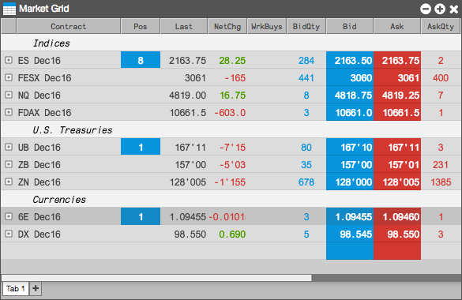
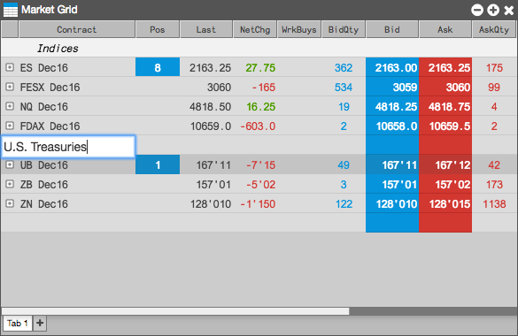
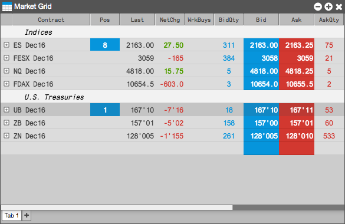
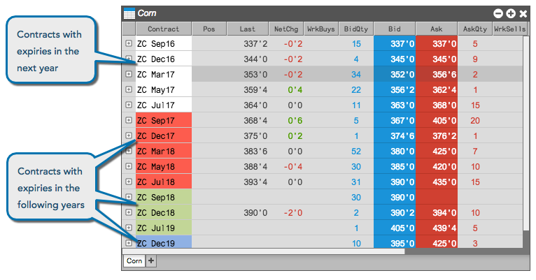

You can add label rows to help you identify different sections of the rows in Market Grid. You might use this feature to provide visual cues for a Market Grid with many rows. For example, you could add label rows to add breaks based on years or quarters, similar to the following.

To add a label row:
Right-click the row above which you want to add the label row, and select Insert label row.
Enter the desired label text and press <Return>.

The label row is added.

Note: You can also add a label row by selecting a row in the grid and typing the apostrophe (') key.
To rename a label row:
Right-click on the label row text and select Edit label.
Enter the new label name and press Enter.
To remove a label row, right-click on the row and select Remove row from the context menu.
You can enable row coloring to show all contracts within rolling 12-month periods with different colors.

To color contracts for successive years:
Right-click in the grid to display the context menu, and select Settings.
In the Market Grid Settings, enable the Color rows by years setting.
Click Apply; then click Save.
To highlight a price cell every time it updates:
Right-click in the grid to display the context menu, and select Settings.
In the Market Grid Settings, enable the Highlight price cells on update setting.
Click Apply; then click Save.